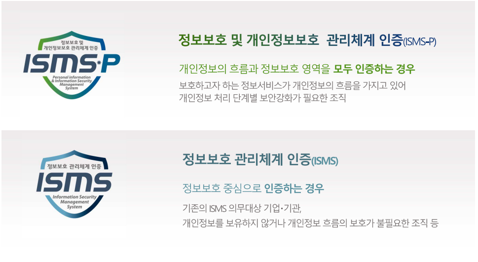

ISMS-P


ISMS-P
• ISMS-P는 정보보호 및 개인정보보호 관리체계 인증을 의미하며, 별도 운영되던 기존의 ISMS(정보보호 관리체계 인증)과
PIMS(개인정보보호 관리체계 인증)의 심사항목이 유사하고 개별 운영에 따른 기업의 혼란 및 재정.인력상 부담이 발생하여,
이를 관련 법규(정보통신망법제47조, 제47조의3, 개인정보보호법32조의3)에 의거하여 통합하게 되었습니다.
• 현재는 ISMS와 ISMS-P 두 종류의 인증이 존재하며 개요는 아래와 같습니다.

AWS Professional Services
Security, Risk Management & Compliance Consultant (SRC)
• AWS Professional Services team Security Risk & Compliance Consultant (SRC)는 AWS 고객과 파트너와 협력하여 보안,
DevOps 및 클라우드 인프라를 설계, 구축 그리고 최적화하여 안전한 클라우드 운영 환경을 제공함으로써 비즈니스 가치를
가속화 할 수 있도록 지원 합니다.
• SRC는 보안 위험을 효과적으로 관리하는 모범사례, 방법론 그리고 오퍼링으로 고객의 환경과 데이터를 보호 할 수 있도록
도와 주고 기술적 역량을 갖출 수 있도록 지원 합니다.
SK인포섹 정보보호 및 개인정보보호 관리체계(ISMS-P) 인증 컨설팅
• SK인포섹은 국내 1위 보안 컨설팅 사업자로서 검증된 역량, 차별화된 품질을 토대로 최적의 개선방안 및 가치를 제공합니다.
• 다양한 보안 환경 및 다수 사업 수행 경험을 바탕으로, 산업 특성에 적합한 정보보안 프레임워크를 설계하며
최적화된 보안관리체계 수립 및 인증 획득을 지원 합니다.
• 전문적이고 체계적인 방법론 기반의 ISMS-P 컨설팅 서비스와 다양한 관점의 보안 기술을 적용하여 컴플라이언스를 준수합니다.